Hearts2Hearts
하츠투하츠
Hearts2Hearts is a modern idol group of eight talented members focused on spreading happiness, motivation, and love through dynamic pop music harmony. Formed with the vision of bridging hearts between people, the group is committed to delivering the best stage performances at every opportunity.
The name "Hearts2Hearts" symbolizes the genuine connection between members and fans — an emotional bridge created through music. Every song we release is a love letter to Heartbeats around the world.
Blending pop, R&B, and electronic dance genres, Hearts2Hearts continues to push creative boundaries to deliver music that not only sounds good but touches the soul.
Meet the Members
Click on a member photo to view their full profile.
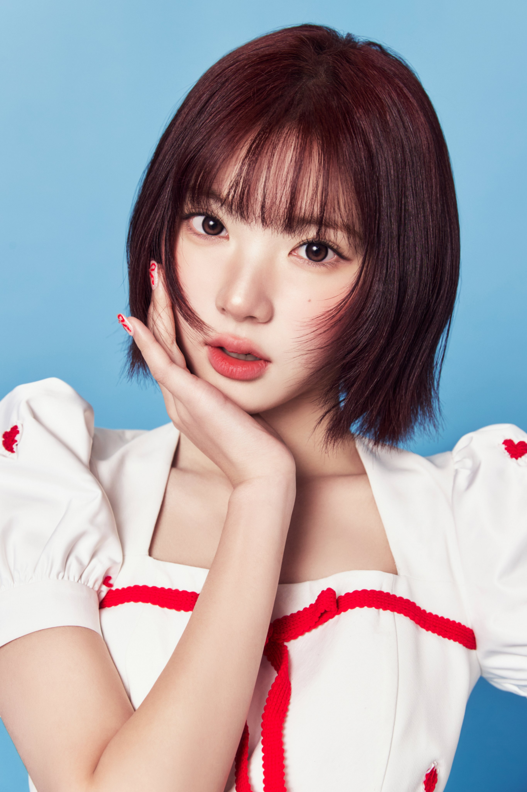
Click for profile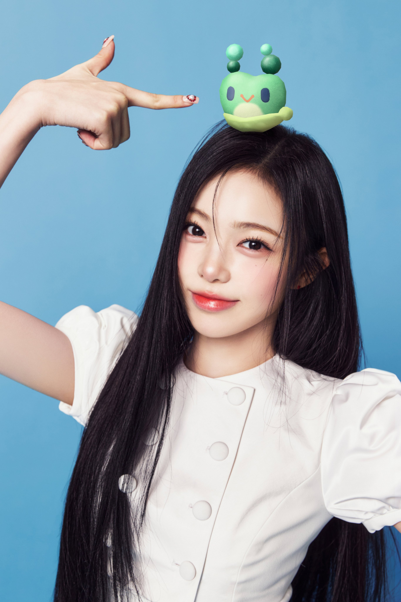
Click for profile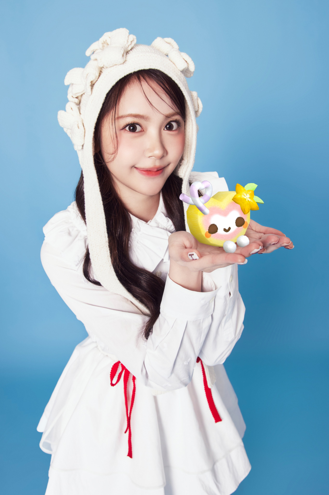
Click for profile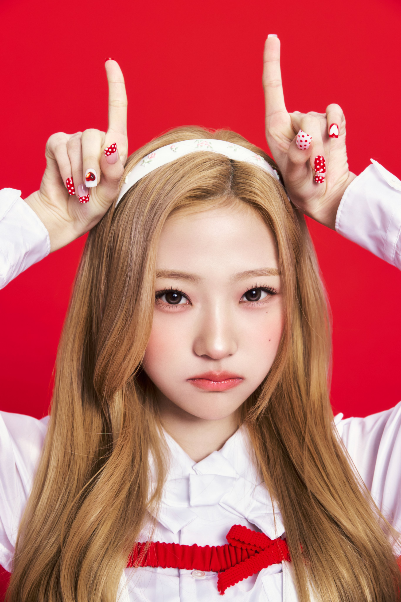
Click for profile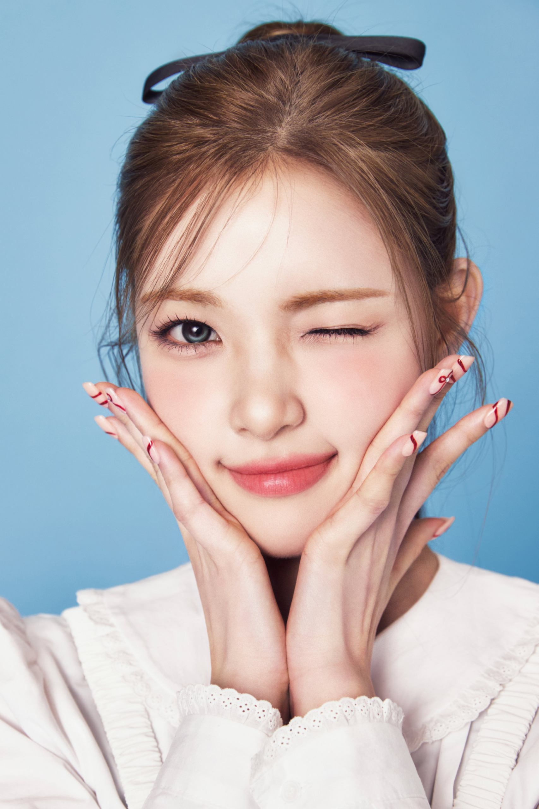
Click for profile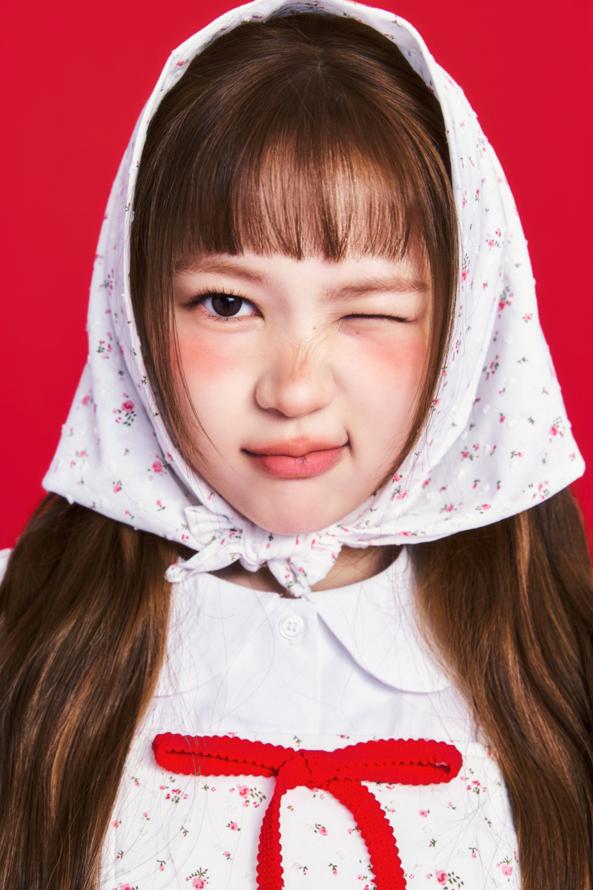
Click for profile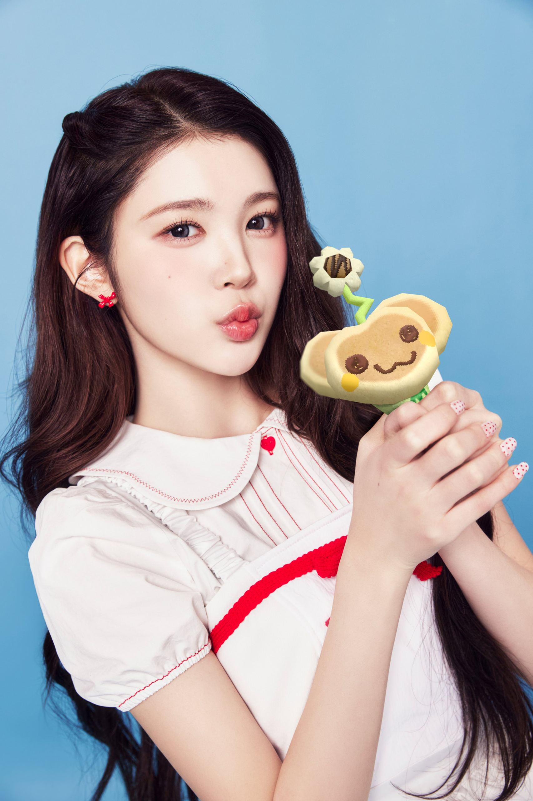
Click for profile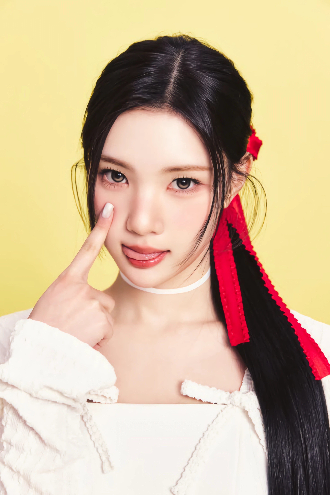
Click for profileGallery
Precious moments of Hearts2Hearts, our beloved journey together

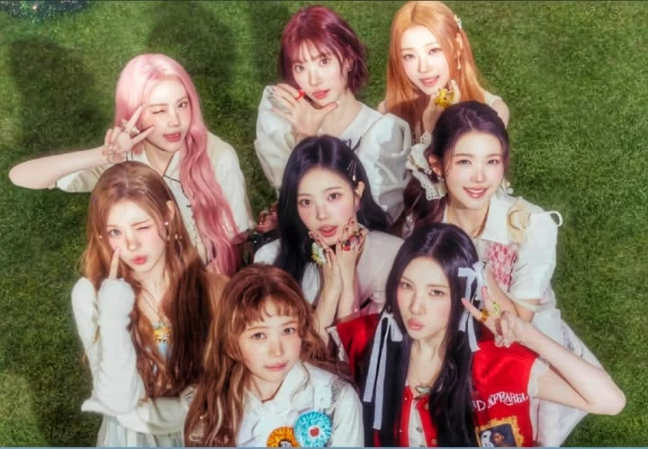
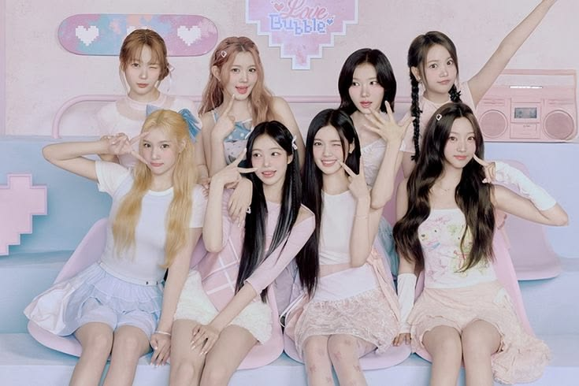
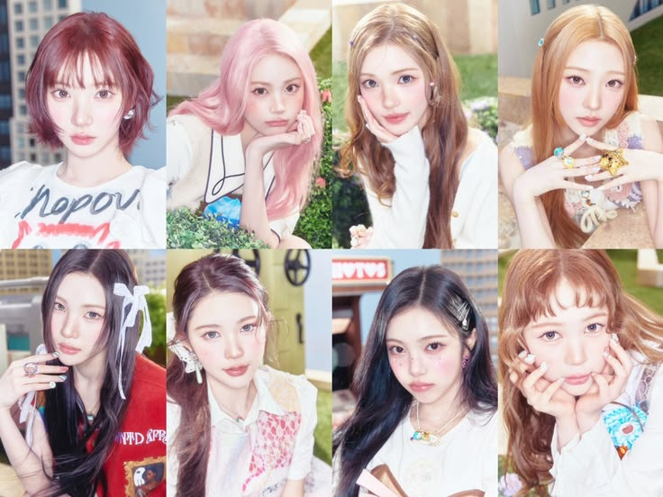
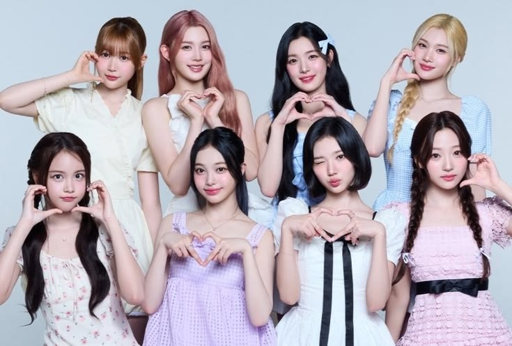